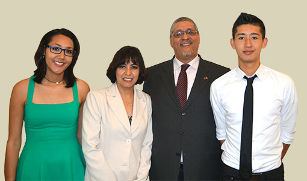

Han sido misioneros en Bélgica desde 1999 y han visto a Dios manifestarse de diferentes maneras. Desde su llegada a Bruselas comenzaron el trabajo evangelístico con la población de la ciudad que es en un 60% de origen extranjero. Solo en la ciudad de Bruselas se cree viven 200,000 personas de origen musulmán. Al ser la capital de la Comunidad Económica Europea, Bruselas atrae a personas de todas la nacionalidades buscando una mejor vida, de ahí que en esta ciudad haya varios campos de refugiados para personas que llegan ilegalmente a este país buscando refugio por diferentes razones. Además de los llamados Bruxelloises (gente nativa de Bruselas) estan todo el personal del parlmamento Europeo y de las instituciones Europeas lo cual hace a Bruselas una ciudad muy cosmopolita y complicada.
Al inicio de la obra ellos trabajaron en colaboración con otro misionero americano y pasaron el tiempo en los campos de refugiados evangelizando a las personas. Después de un año decidieron abrir un café cristiano llamado Le Phare (El Faro) y ahí vieron pasar a 40,000 personas en el transcurso de 4 años. Muchos se convirtieron al Señor y otros no, pero todos oyeron el evangelio de salvación. Dios sano a personas de cáncer y diversas enfermedades en ese café. Los iraníes llegaban diciendo que habían tenido sueños y visiones y poco a poco comenzaron un grupo de iraníes de 38 personas en su casa. Fue un tiempo poderoso, asombroso y de gran gozo. Además se convirtieron al Señor muchos de las repúblicas exsoviéticas y de origen africano además de muchísimos filipinos. Debido a esto y por los problemas de idiomas Mauricio y Lulú acabaron pastoreando 4 congregaciones al mismo tiempo en 3 diferentes idiomas. Esto genero la necesidad de fundar la Escuela Bíblica Logos donde entrenaban a los lideres para esas nuevas congregaciones en sus propios idiomas y que el día de hoy trabaja con un promedio de 30 a 40 estudiantes por año que reciben un grado universitario en Teología.
El día de hoy ellos siguen dirigiendo la escuela bíblica y han fundando otra iglesia, la Iglesia Logos de Bruselas donde hay personas de muchas diferentes nacionalidades. Los servicios son en ingles y francés con traducción simultanea.
La visión del ministerio de los Salazar Romero se resume en esta máxima: “Equipando a los Santos para tocar la Naciones”.
Mauricio estudió una Licenciatura así como un Associates Degree en Teología de Covenant Life University también un Diplomado en Misiones Internacionales en el Center for International Christian Ministries de Londres Inglaterra.
Su esposa Lourdes Romero es Licenciada en Psicología egresada de la Universidad Iberoamericana y obtuvo un Associates Degree, una Licenciatura y una Maestría en Teología en Covenant Life University.
Toda la familia es poliglota y hablan Español, Inglés, Francés y Neerlandés.
Su hija Betsabé es una excelente traductora a varios idiomas y es la traductora de planta en la iglesia así como en la Facultad Teológica Logos en la traducción simultanea de los cursos de teología y esta actualmente cursando la Universidad.
Obed es un excelente músico y ayuda en la alabanza así mismo traduce simultáneamente en la iglesia, en la escuela dominical y ocasionalmente en la facultad teológica Logos. El esta iniciando la carrera de Música en la Universidad.
No hay nada mas importante en las misiones mundiales que la oración y la intercesión por los misioneros, ore por la familia Salazar Romero y la obra en Bruselas.
Escríbenos a la siguiente dirección de correo:
pastormau@gmail.com